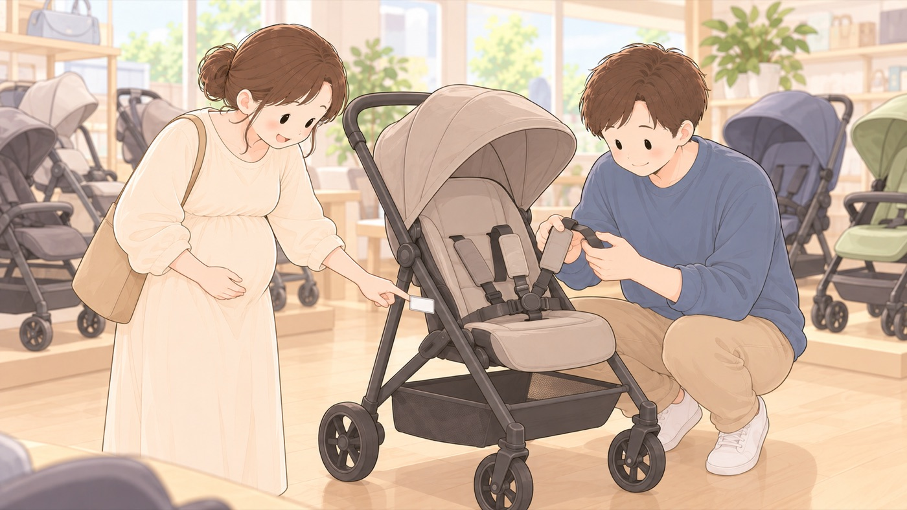

選ぶとき
ベビーカーと、子供PSCマーク
2026年7月8日に対象に加わった。ただし2028年7月まではマークのない製品も売られている
2026年7月8日から、ベビーカーが子供PSCマークPSCマークのうち、主に子どもが使う製品を対象にしたもの。2025年12月に3歳未満向けおもちゃとベビーベッドで、2026年7月にベッドガードとベビーカーで表示が義務になった。国の技術基準への適合と、対象年齢・警告表示の表示が求められる。の対象になりました。ただしベビーカーには施行の日から2年間の経過措置があり、2028年7月までは、マークのない製品も売られています。マークが付いているものを選べるなら、そちらを選びます。

- すること：子供PSCマークが付いているかを確かめる
2028年7月までは経過措置期間で、マークのない製品も並んでいます。付いているものを選べるなら、そちらを選びます。 - すること：使えるのは生後1か月からだと知っておく
A型ベビーカーの対象は、多くが生後1か月からです。退院の日にはまだ使えないので、その日の移動はチャイルドシートになります。買う前に、取扱説明書で対象月齢を確かめます。 - すること：首がすわるまでは、平らに近い角度で使う
背もたれをどこまで倒せるかを、買うときに見ておきます。 - すること：シートベルトの形を、買う前に見る
ベビーカーからの転落は0歳から起きています。使うたびに締めるものなので、締めやすさを確かめておきます。 - しないこと：ハンドルに荷物をかける前提で選ばない
重い荷物をかけると後ろに傾いて転倒します。下のかごの大きさを見ておきます。
🛍 グッズの選び方
PR- 両対面式だと、赤ちゃんの顔を見ながら押せます。月齢が上がったら前向きに変えられます。
- 対象は生後1か月からです。退院の日には使えないので、その日はチャイルドシートで帰ります。
- 下のかごが大きいものを選ぶと、ハンドルに荷物をかけずに済みます。かけると後ろに傾いて転倒します。
- アップリカ A型ベビーカー カルーンエアー AD（両対面・1か月〜36か月）両対面。顔を見ながら押せるAmazonで見る →（新しいタブで開きます）
- アップリカ A型ベビーカー カルーンエアーメッシュ AC（両対面・1か月〜36か月）背中側が通気するメッシュ。暑い時期の座面にこもる熱を逃がすAmazonで見る →（新しいタブで開きます）
- コンビ A型ベビーカー スゴカルエアー エッグショック AM（両対面・1か月〜3歳）両対面。たたむと自立するAmazonで見る →（新しいタブで開きます）
- ベビーカー用 アンダーバッグ（下かご収納）下かごを増やす。ハンドルに掛けずに済むAmazonで見る →（新しいタブで開きます）
- Liscia ベビーカー サンシェード（メッシュ・虫よけ兼用）メッシュ。日よけと虫よけを兼ねるAmazonで見る →（新しいタブで開きます）
- ダイヤ ベビーカー用レインカバー（A型B型・対面/背面式）雨よけと風よけ。幌だけでは覆えない前面をふさぐAmazonで見る →（新しいタブで開きます）
リンクはAmazonアソシエイトリンクです。当サイトはアフィリエイトプログラムに参加しています。Amazonのアソシエイトとして、当サイトは適格販売により収入を得ています。 選び方の方針
この項目の根拠
- みんなの消費安全ナビ Vol.689 乳幼児用ベッドガードとベビーカーを購入する際には「子供PSCマーク」の表示を確認しましょう！（消費者庁）（新しいタブで開きます）
2026年7月8日に乳幼児用ベッドガードとベビーカーが子供PSCマークの対象製品に追加されたこと、ベビーカーについては施行の日から2年間の経過措置期間が設定されており経過措置期間においては子供PSCマークがない製品も販売されること、購入する際は子供PSCマークを確認すること、転落などの事故防止のためシートベルトは必ず装着しハンドルに重い荷物をぶら下げることは厳禁であること。 - こどもの命を守るため、今知ってほしい ── 乳幼児用ベッドガード・ベビーカーの事故を防ぐために（2026年6月25日・製品評価技術基盤機構）（新しいタブで開きます）
2015年から2026年6月までの約10年間に製品評価技術基盤機構に通知された製品事故情報では、ベビーカーで段差につまずき転倒するなどのこどもの重傷事故が11件発生していること、これから出産や子育てに向けた準備を行う家庭ではデザインや価格だけでなく技術基準等に適合した製品を選ぶことが重要であること、使用時にはシートベルトを着用し、折りたたみの操作は乳幼児から離れた場所で行い、走行の際には段差や溝に注意すること。 - 子どもを事故から守る！事故防止ハンドブック（消費者庁・PDF）（新しいタブで開きます）
ベビーカーからの転落は0歳から起こること、ベルトを必ず正しく締めること、重い荷物をぶら下げてバランスを崩して転倒することがあること。